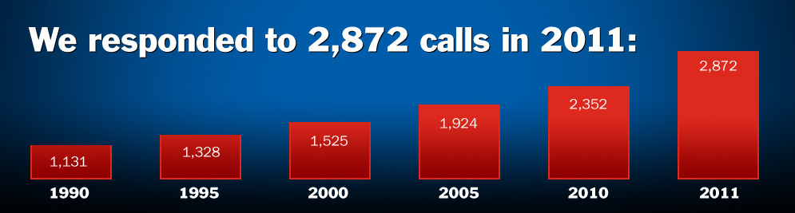

<!DOCTYPE HTML PUBLIC "-//W3C//DTD HTML 4.01 Transitional//EN">
<html>
<head>
<meta http-equiv="Content-Type" content="text/html; charset=UTF-8">
<link href='http://fonts.googleapis.com/css?family=Exo:400,800' rel='stylesheet' type='text/css'>
<link href="CSS/root.css" rel="stylesheet" type="text/css">
<link href="CSS/dropdown.css" rel="stylesheet" type="text/css">
<script type="text/javascript" src="scripts/dropdown.js"></script>
<title>Victor-Farmington Volunteer Ambulance</title>
</head>

<body>
<table border="0" cellspacing="0" cellpadding="0" class="root" align="center">
  <tr>
    <td class="header"><a href="index.html"></a></td>
  </tr>
  <tr>
    <!--#include virtual="includes/navigation.html" -->
  </tr>
  <tr>
    <td class="content"><p class="headlines"><strong>Donate:</strong></p>
   <p class="altHeadlines">Please consider supporting Victor-Farmington<br>
Volunteer Ambulance by Donating Today!</p>
    
    <p><span class="blueSubheads">Help Us Maintain Excellence in Emergency Care for Our Growing Region</span></p>
    
      
      <form action="https://www.paypal.com/cgi-bin/webscr" method="post">
<input type="hidden" name="cmd" value="_s-xclick">
<input type="hidden" name="hosted_button_id" value="NBRK88YZ2D4S8">
<input type="image" src="images/donateButton.gif" border="0" name="submit" class="rightFloats" alt="PayPal - The safer, easier way to pay online!">

</form>

 <p>Thank you for your interest in supporting Victor Farmington Volunteer Ambulance. We provide a rapid response when time is critical. We believe that our residents and business are served best by a local operation, located in our town. Our ability to meet the needs for your emergency request is measured by our ability to respond to 96% of all requests received. Emergency Medical Services are provided by volunteers who live in the community and employees who have long term careers in our community; we collectively develop strong, personal, and unique knowledge of the area and patients served. Our station is always open and you are welcome to visit any day of the week.
    
 
    <ul><li><span>We utilize the latest medical equipment and technology available to continually improve service capabilities, ensuring our community is treated with the highest quality care available. This year, we're looking to purchase a new heart monitor, a vital piece of emergency care medical equipment.</span></li>
      <li><span>In order to operate our highly technological medical equipment and to provide exceptional emergency medical care, our professional and volunteer staff are  trained, qualified and maintain the highest industry standards with Paramedic Advanced Life Support (ALS) levels of care.</span></li>
      <li><span>With 96% call coverage, we responded to 2,872 calls in 2011, an increase of over 500 calls from 2010. Additional growth is expected in 2012, as we've  experienced yearly growth since 1990.</span></li></ul>
      
      <br><br>
<p class="altHeadlines">With your tax-deductible donations, we're able to provide resources<br>
    to ensure that our exceptional level of care is maintained<br>
    despite continual regional growth.</p>
<p>Feel Free to use our online donation for your response to our annual fund drive or you are welcome to make you donation at any time.</p>
  <p><span class="blueSubheads">Help Us Make Future Improvements:</span><ul><li><span>Fund operations to allow an increase in number of duty crews in service. Potentially staffing a third crew during day-time hours seven days per week.</span></li>
      <li><span>Purchase of an additional ambulance.</span></li>
      <li><span>Potential addition of second facility to accommodate for continued growth.</span></li></ul><br>
      <p class="headlines"><strong>We need your <span style="color:#dc291e;">help</span>! Please show your support today!</strong></p><br>
      <p> Victor-Farmington Volunteer Ambulance is a United Way Agency. If you wish to submit a donation through the United Way, please specify your donation to our agency as #1111.</p><br>
</td>
  </tr>
  <tr>
    <td class="footer"><a href="http://www.facebook.com/victorfarmingtonambulance" target="_blank"></a> Copyright © Victor Farmington Volunteer Ambulance Corps</td>
  </tr>
</table>


</body>
</html>
